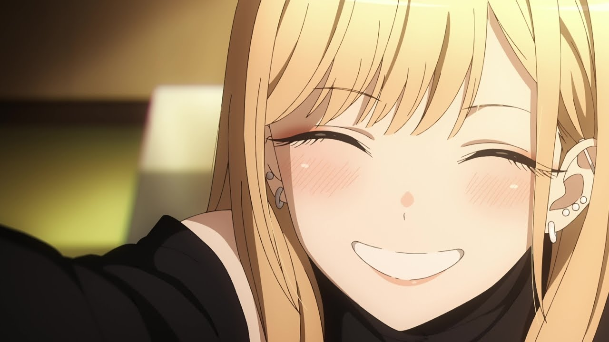
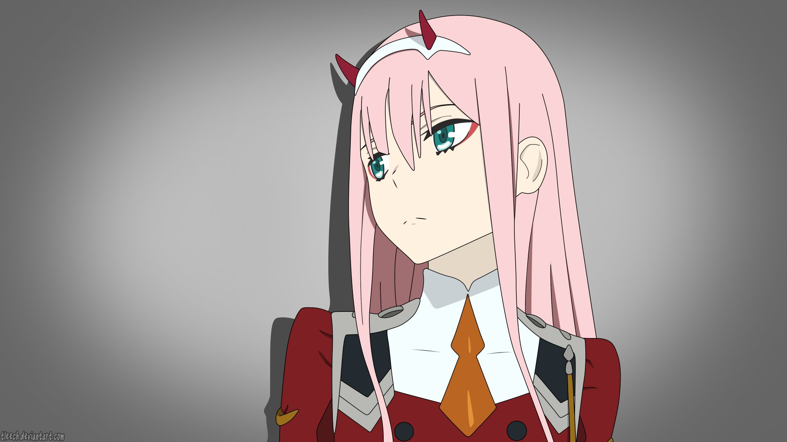
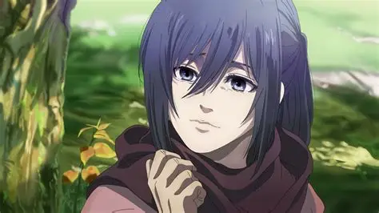
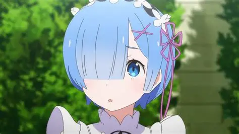
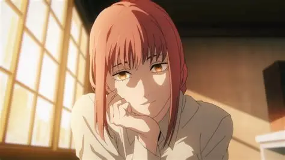
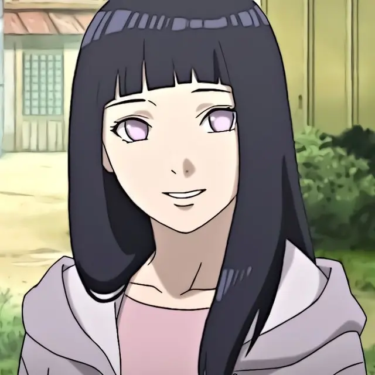
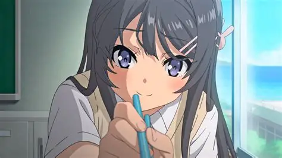
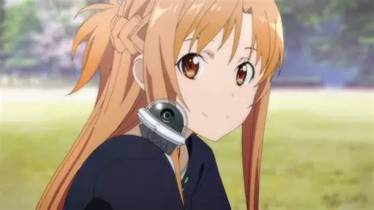
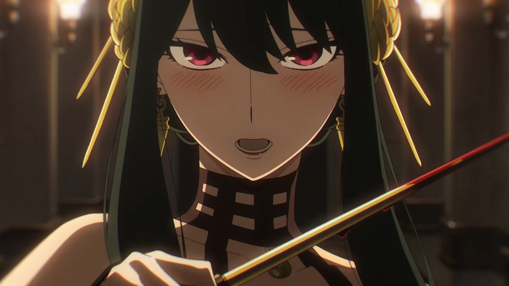
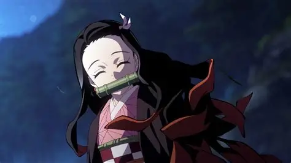

SMASH Senpai
SMASH Senpai is an anime ranking and smash-or-pass culture hub built for real anime fans. We break down characters beyond just looks — personality, story impact, popularity, and cultural influence all matter here. This article ranks the Top 10 Anime Waifus of All Time, based on fan love, legacy, and overall presence in their respective anime.
Each waifu listed below includes a detailed breakdown, a visual showcase, and context from their anime series. If you want to take it a step further, you can also vote on these characters yourself using our interactive Smash or Pass game.
Sponsored
#1 Marin Kitagawa
Marin Kitagawa from My Dress-Up Darling represents a modern evolution of the anime waifu archetype. What makes Marin stand out is not just her striking design, but her personality that feels genuinely alive. She is confident, expressive, emotionally open, and deeply passionate about her interests, especially cosplay. Unlike many traditional waifus who exist primarily to support the male protagonist, Marin drives the story forward through her curiosity and enthusiasm.
Her relationship with Gojo is built on mutual respect rather than one-sided admiration, which resonates strongly with modern anime audiences. Marin embraces her interests without shame, breaking stereotypes around otaku culture and self-expression. This authenticity makes her extremely relatable, which is a major reason she exploded in popularity across social media and anime communities worldwide.

Wanna vote them yourself? Check it out here (not sponsored)
SMASH SENPAI – Smash or Pass#2 Zero Two
Zero Two from Darling in the Franxx is one of the most iconic anime waifus of the late 2010s. Her sharp horns, pink hair, and bold personality immediately set her apart visually, but her emotional depth is what truly defines her. Zero Two is a tragic character shaped by isolation, experimentation, and the desire to be human, which creates a powerful emotional connection with viewers.
Her dynamic with Hiro forms the emotional core of the anime, blending romance, pain, and obsession. Zero Two’s unapologetic attitude and rebellious nature made her a symbol of freedom and emotional intensity. Even years after the anime aired, she remains a dominant presence in anime culture, fan art, and discussions about legendary waifus.
Sponsored
#3 Mikasa Ackerman
Mikasa Ackerman from Attack on Titan represents strength, loyalty, and quiet emotional depth. Unlike traditional waifus focused on charm or fanservice, Mikasa’s appeal lies in her unmatched combat ability and unwavering devotion. She is one of the strongest soldiers in the series, often carrying entire battles through skill and discipline.
Her emotional restraint hides deep internal conflict, especially regarding her bond with Eren. Mikasa’s growth throughout the series shows maturity, loss, and moral struggle, making her one of anime’s most respected female characters. Her balance of power and vulnerability solidifies her place among the greatest waifus of all time.
#4 Rem
Rem from Re:Zero became a legendary waifu due to her emotional sacrifice and unwavering love. Starting as a supporting character, Rem quickly stole the spotlight through her development and heartfelt devotion to Subaru. Her iconic blue hair and maid outfit are instantly recognizable across anime culture.
What truly elevates Rem is her emotional depth and resilience. She confronts trauma, self-doubt, and despair while maintaining kindness and strength. Her famous confession scene remains one of the most emotionally impactful moments in modern anime, solidifying her status as a fan-favorite waifu.
Sponsored
#5 Makima
Makima from Chainsaw Man is a waifu built on mystery, dominance, and psychological control. Her calm voice, composed demeanor, and unsettling authority make her dangerously attractive. Makima represents a darker, more mature archetype that appeals to fans who enjoy morally complex characters.
Rather than relying on traditional romance, Makima’s appeal comes from her power dynamics and manipulation. She commands attention in every scene, creating tension and fascination. This unique presence has made her one of the most talked-about anime women of recent years.
#6 Hinata Hyuga
Hinata Hyuga from Naruto is a waifu defined by kindness, emotional growth, and quiet strength. Initially portrayed as shy and insecure, Hinata’s journey is one of self-belief and perseverance. Her admiration for Naruto pushes her to overcome fear and become stronger, both emotionally and physically.
Hinata’s appeal lies in her sincerity and loyalty. She represents emotional warmth rather than dominance or aggression, making her one of the most beloved characters in the Naruto franchise. Her growth into a confident kunoichi and partner solidified her long-term fan appeal.
Sponsored
#7 Mai Sakurajima
Mai Sakurajima from Rascal Does Not Dream of Bunny Girl Senpai stands out due to her intelligence, emotional maturity, and grounded personality. Unlike exaggerated anime tropes, Mai feels realistic, calm, and self-aware, which resonates deeply with viewers.
Her relationship with Sakuta is built on honest communication and trust, making it one of the healthiest dynamics in anime romance. Mai’s subtle expressions and sharp wit make her unforgettable without relying on over-the-top fanservice.
#8 Asuna Yuuki
Asuna Yuuki from Sword Art Online is a classic anime waifu known for her balance of strength, compassion, and leadership. As a skilled fighter and strategist, Asuna plays a crucial role in survival within the virtual world of Aincrad.
Beyond combat, Asuna’s emotional support and resilience make her an ideal partner archetype. Her long-standing popularity and recognition across multiple seasons cement her legacy in anime history.
#9 Yor Forger
Yor Forger from Spy x Family combines elegance, innocence, and deadly combat skills in a unique and charming way. Her double life as an assassin contrasts hilariously with her awkward social behavior.
Yor’s appeal comes from this contrast — she is both terrifying and wholesome. Her strong moral compass and dedication to her family make her one of the most lovable modern anime waifus.
#10 Nezuko Kamado
Nezuko Kamado from Demon Slayer is a symbol of purity, loyalty, and inner strength. Despite being turned into a demon, Nezuko retains her humanity and love for her family.
Her silent expressions and protective instincts made her instantly iconic. Nezuko’s design and emotional presence helped elevate Demon Slayer into a global phenomenon.
Still Can’t Decide?
If reading rankings isn’t enough, jump straight into the action and vote Smash or Pass yourself on SMASH Senpai.
PLAY SMASH OR PASS